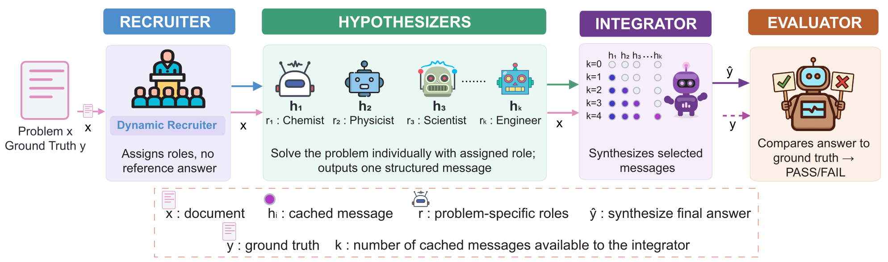
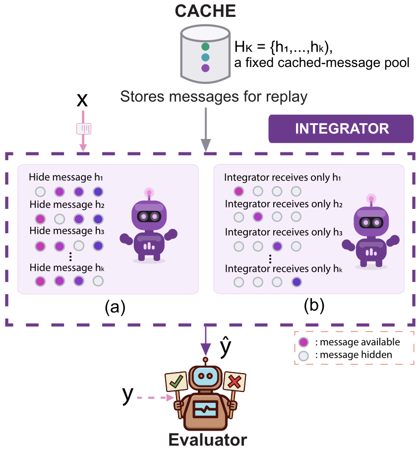
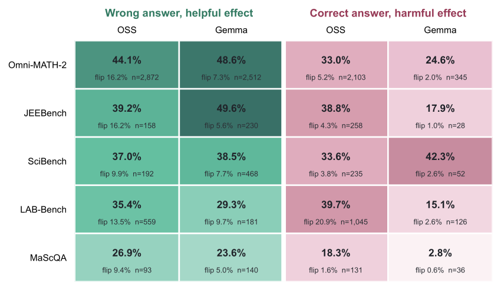

The core idea
Multi-agent systems routinely decide which messages should shape a final answer using agreement, confidence, or automated scores. That filtering assumes a message likely to be correct is also worth keeping.
This paper separates two different judgments about the same message:
- Proposal correctness — is the message's own answer right?
- Trajectory value — does making the whole message available help or harm the reasoning that follows?
These come apart in both directions. A wrong answer can supply a useful decomposition or constraint; a correct answer can be paired with misleading reasoning that disrupts integration. The paper's conclusion: answer correctness is informative, but it does not determine trajectory value.
Diverse Hypothesis Deliberation (DHD)
DHD is a controlled measurement protocol. For each problem a recruiter assigns five problem-specific roles without seeing the ground-truth answer. Five hypothesizers each produce one structured message. An integrator then synthesizes a final answer, and a separate evaluator compares that answer to ground truth.
The measurement comes from replay: the five messages are cached, and the same integrator is run again with each message either available or hidden. Comparing the outcomes isolates one message's contribution — its trajectory value — while holding everything else fixed.


Decoding is fixed per role: recruiter, integrator and evaluator run at temperature 0; hypothesizers run at temperature 0.7 so their solution paths differ. Both model families are scored by the same separate gpt-oss-120b evaluator.
What the study found
Across five mathematics and science benchmarks and two openly available model families — gpt-oss-120b (OSS) and gemma-4-31B-it (Gemma) — wrong-helpful messages appear in every benchmark–model combination.
Among flips caused by wrong-answer messages, more than four in ten are helpful
Restricted to in-pool leave-one-out replays that actually change final correctness, the helpful share for messages with a wrong proposed answer is 41.9% for OSS and 45.3% for Gemma. A problem-cluster bootstrap places the OSS share at 39.5–44.3%.

The effects survive controlled repetition
Repeated replay shows the number of repeatable message effects is unlikely to arise from replay variation alone (p = 0.0002 against a within-block permutation control).
The complete message works best — but why is open
A focused intervention on repeatable wrong-helpful messages found that the complete message works best, and that retaining its reasoning preserves more success than retaining only its answer. The paper states plainly that the source of the complete-message advantage remains open.
Evaluation is stable across evaluators
| Evaluator pair | Agreement | Cohen's κ | Coverage |
|---|---|---|---|
| OSS vs Llama | 94.24% | 0.850 | 99.83% |
| OSS vs Gemma | 95.65% | 0.884 | 99.45% |
| Llama vs Gemma | 96.62% | 0.915 | 99.53% |
16,724 saved submissions replayed with three open evaluators. Meta-Llama-3.1-70B-Instruct and gemma-3-27b-it appear here only as evaluators in this agreement check — they are not actor model families in the study.
Benchmarks
| Benchmark | Domain and format | Problems |
|---|---|---|
| Omni-MATH-2 | Open-answer competition mathematics | 4,181 |
| JEEBench | Mixed-choice and numeric exam science | 515 |
| SciBench | Numeric and short-answer college science | 580 |
| LAB-Bench | Long-evidence multiple-choice biology | 741 |
| MaScQA | Mixed-format materials science | 649 |
Reproduce the study
There is an important distinction between offline analysis reproduction and live model regeneration, and they are not equally available.
| Level | What it does | What you need | Open to a newcomer? |
|---|---|---|---|
| 1. Offline | Install, unit tests, checksum validation, regenerate figures and summary tables from data bundled in the repository | Python ≥ 3.11 | Yes, fully. This is the reproduction path. |
| 2. Live protocol | Run DHD on the bundled fixture against an endpoint you control | Level 1 plus your own OpenAI-compatible endpoint | Yes, if you bring an endpoint |
| 3. Component masking | Matched masking arms on pools you generate | Level 2 plus cached pools | Mechanism yes; see repository caveats |
| 4. Full regeneration | The complete five-benchmark, two-family campaign | Benchmark licenses and HPC-scale inference | Not realistically |
Offline reproduction, from a clean machine
git clone https://github.com/ChihHsuan-Yang/AAAI_Wrong-but-Useful.git
cd AAAI_Wrong-but-Useful
python3 -m venv .venv && source .venv/bin/activate # Python >= 3.11
python -m pip install -r requirements.lock
python -m pytest # unit tests
python scripts/validate_inputs.py # checksum-validate bundled data
bash scripts/reproduce_analysis.sh # regenerate figures and summary tablesNo API key, endpoint, cluster account, or author filesystem is needed for this path. To run new model calls you supply your own endpoint through environment variables; a dry run prints the resolved per-role model identities before any request is made.
Full details, expected outputs, troubleshooting and a per-artifact reproduction map are in the repository README, docs/PAPER_REPRODUCTION_MAP.md and docs/MODEL_DEPENDENCIES.md. The paper's arXiv entry also carries an ancillary reproducibility artifact.
Data and models
No model is released, and none is needed
Dataset access
The full measurement archive is published at AgentsSci/AAAI_Wrong-but-Useful. It is access-controlled, not a public download, because it contains third-party benchmark question text and raw model messages whose redistribution terms are governed by the upstream benchmark licenses — including CC BY-NC-SA 4.0 for MaScQA and CC BY-SA 4.0 for LAB-Bench.
Offline reproduction does not depend on it: the derived data and figure inputs needed for the Level 1 path are bundled in the code repository itself.
Limitations
Quoted from the paper, because they qualify every result above.
- Trajectory-value labels describe a message–pool–integrator context, not an intrinsic property of text; individual signs can change even with fixed problems and messages.
- Repetition reduces but does not eliminate uncertainty, and the fifth-block analysis measures same-problem opportunity rather than unseen-problem generalization.
- Leave-one-out hides a whole message in one fixed prompt order; the smaller masking diagnostic only begins to separate reasoning from the answer field.
- Nested K prefixes are not randomized agent additions, and one model family fills all reasoning roles within each run.
- Results may not transfer to interactive debate, heterogeneous agent models, frontier models, or tasks without a stable ground-truth answer.
- Gemma rates condition on complete replay records, and compound labels are more evaluator-sensitive than individual answers.
Citation
@misc{yang2026wrongbutuseful,
title = {Wrong but Useful: Trajectory Value Beyond Answer
Correctness in Multi-Agent Messages},
author = {Yang, Chih-Hsuan and Chowdhury, Anjir Ahmed and
Yang, Cheng-Hau and Zheng, Weijian and
Llorente, Fernando and Ma, Xiaolong and Li, Xinyang and
Huerta, Eliu A. and Foster, Ian T. and Thakur, Rajeev},
year = {2026},
eprint = {2608.14375},
archivePrefix = {arXiv},
primaryClass = {cs.AI},
url = {https://arxiv.org/abs/2608.14375}
}Acknowledgments
This research used resources of the Argonne Leadership Computing Facility, a U.S. Department of Energy (DOE) Office of Science user facility at Argonne National Laboratory (ANL) operated under Contract No. DE-AC02-06CH11357. The work was also supported under the same contract by the DOE Office of Science's Advanced Scientific Computing Research Program and by Laboratory Directed Research and Development (LDRD) funding from ANL, provided by the Director, DOE Office of Science.